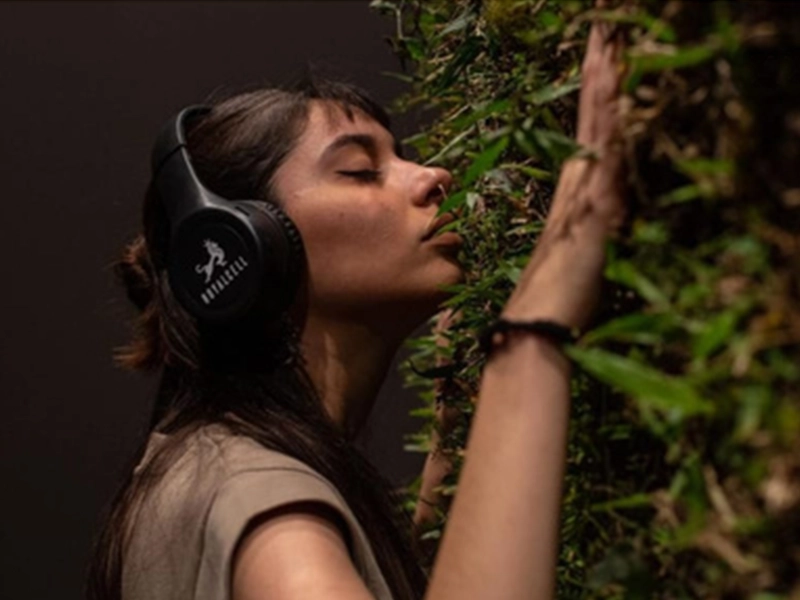

ARTE Y CULTURA
Encuentro Nacional de Museos Mirando el Futuro
Umas es una manera de empoderarnos como artistas y diseñadoras a través de nuestro arte.
03 Oct 2023
Umas es una manera de empoderarnos como artistas y
diseñadoras a través de nuestro arte y oficios, para proponer a
través del uso responsable y consciente de los recursos y
materiales, una manera de crear-con el entorno, buscando
siempre el contacto humano y la interacción cercana, en donde
se refuerzan los vínculos interpersonales. ODS 5/ 12.
“Constructo de contemplación de lo finito” es una instalación
escultórica, que formó parte del XVI Salón Nacional de Arte
Contemporáneo del MUNT (Museo Universidad Nacional de
Tucumá)- Tucumán 2022, obra que permitió acercarnos a los
ODS desde una perspectiva sensible, intuitiva y a su vez
participativa, reflexiva y vivencial.
“A partir del colapso que atravesó nuestro mundo, en el que
nuestras libertades se vieron sometidas a una seclusión, sin
mayores certezas más que el temor mismo a la muerte y la
soledad”, es que nos propusimos realizar un altar a la
naturaleza, donde las personas puedan tener, dentro de un
museo, una experiencia inmersiva, en contacto íntimo a través
de un fragmento vivo de vegetación, con el aporte de audios de
un músico tucumano Emanuel Molina que en su investigación
sonora incluye sonidos de aves e insectos de las yungas
tucumanas complementan la experiencia, para ser conscientes
del tiempo, del presente y lo que es verdadero en nuestra
experiencia de vida.
“El anhelo de atesorar un instante, en un mágico rito para
suspender en este marco, simbólico y a la vez concreto, un
recuerdo memorable… la naturaleza de la experiencia humana.
Algunas veces podemos retornar hacia nosotros mismos,
volvernos unidad… abstraernos del estado de distracción
esquizofrénico que nos separa, y simplemente Ser.
Esta obra invita a volver-se nuevamente refugio, permitiendo la
reconexión, y fundirse en la autopercepción y por qué no,
fundirse en lo vasto del infinito. Nos recuerda que tenemos la
capacidad de vivir una vida extraordinaria dentro de una vida
ordinaria, haciendo de un espacio trivial y mundano, un espacio
de conexión con lo sagrado.
El dispositivo pone en acción el constructo de aislamiento y
finitud, como así también rebate el lugar de lo que se contempla,
pues no es una obra estática a observar, sino nuestro mundo
interno siendo contemplado en el mismo acto de contemplación.”
Esta obra promueve un espacio de reflexión sobre los modos de
habitar y las maneras en las que nos relacionamos, donde
ponemos énfasis en la necesidad de mejorar nuestra calidad de
vida a través de dispositivos meditativos que promuevan el
contacto con la naturaleza para tomar consciencia y
responsabilidad por nuestro entorno y que sea accesible a todos
reduciendo las distancias socioculturales. Consideramos que el
arte diluye barreras y sensibiliza, y al estar puesto al servicio de
un bien común al ser humano alcanza su objetivo de
transformación social. ODS 3/ 10/ 13/ 15/ 16.
Fragmentos de texto curatorial por Eugenia Correa.